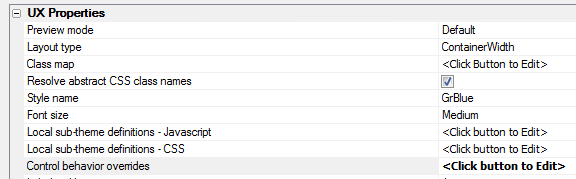

This document describes the updates and fixes made to Alpha Anywhere since its initial release.
To see the 'What's New in V12' document (which describes all of the new features in Alpha Anywhere's initial release) please click here.
Please note that Alpha Anywhere patches are only available to users with
a current subscription.
You can verify your subscription status from within Alpha Anywhere by
going to Help, About, or by clicking this link shown here (https://activation.alphasoftware.com/subscriptionStatus.aspx).
If you install an update for which your subscription is not entitled,
you will need to uninstall the update and rollback to an older version
that you are authorized to use in order to continue using Alpha
Anywhere.
In addition to the official updates that Alpha Software makes available from time to time (which are described in this document), we also make available our internal pre-release builds that allow you to see what features have been added and what bugs have been fixed since the last official update. The features and bug fixes in the pre-release build will be part of the next official update. To see the pre-release notes, please click here.
IMPORTANT: If you currently have build 1620-4172 from 21 Aug 2013 or an earlier build installed, then this is a required update.
| UX Component | Using Google Charts as an Alternative to the Built-in Chart Controls |
The UX component contains a powerful built-in
chart control (based on the Microsoft .Net
visualization library). This is a 'server-side'
control (meaning that the chart is rendered on
the server and then the resulting image is sent
to the browser. However, there may be times when
you want 'client-side' charting (i.e. charts
that are rendered using Javascript). The Google
Chart API is perfect for this. (Note: There are
number of high quality open source Javascript
libraries that you can choose from). In this video we show how you can use the Google Chart API to add client-side charts to a UX component. Watch Video - Part 1 Watch Video - Part 2 Download Component |
| UX Component | Using SQL data in a Google Chart |
In previous videos we have shown ho easy it is
to use Google Charts in a UX component by simply
copying code from the Google Charts API
documentation. However, in all of the example in
the Google Chart API documentation, the data
plotted by the chart is static (i.e. it is hard
coded into the Javascript). Of course, in a real application, it is likely that you will want to query a SQL database to get the data to be plotted on the chart. In this video we show an example of how this can be done. Watch Video - Part 1 Watch Video - Part 2 Watch Video - Part 3 Download Component |
| UX Component | Control Behavior Overrides - Customizing The Data Picker and Edit-Combo Behavior on a Phone |
The UX component allows you to customize the
behavior of certain controls based on the screen
size of the device. For example, normally, the
'picker' for a date control, or an edit-combo
control opens in a drop-down window, immediately
under the control. However, on a phone, which
has a narrow screen, there is not enough room to
display the control's 'picker' in a dropdown
window. Instead, you are likely to want the
control to appear in a window that is docked to
the bottom of the screen, centered horizontally. In this video we show how you can define Javascript to override the behavior of certain controls, depending on the screen size. Watch Video |
Report Server - The Report Server code was previously part of the A5ApplicationServer.exe executable. Now, the Report Server has been moved into its own executable - A5reportserver.exe. When you install the Application Server patch you will notice this new executable has been installed. If you have both the Application Server and the Development version installed on the same computer and you want to be able to use the Report Server when printing reports using the server in the Development version, copy the a5reportserver.exe file from the folder where the Application Server is installed to the folder where the Development version is installed.
HTML Editor - Internet Explorer V11 - As a result of changes Microsoft made to Internet Explorer V11, the HTML editor (which is based on the Internet Explorer ActiveX control) would fail to open under certain circumstances. While it is still not clear exactly what change Microsoft made, a work around has been found and now the HTML editor will work if you have IE11 installed.
UX Component - Absolute Layout Editor - Internet Explorer 11 - Has been re-written to remove its dependency on the Internet Explorer 11 ActiveX control. As a result, this editor will now work correctly even if you have Internet Explorer 11 installed. Previously, the editor would fail if you had Internet Explorer 11 installed.
UX Component - Web Style Builder - Internet Explorer 11 - Has been re-written to remove its dependency on the Internet Explorer 11 ActiveX control. As a result, this editor will now work correctly even if you have Internet Explorer 11 installed. Previously, the editor would fail if you had Internet Explorer 11 installed.
UX Component - List Control - onTap Event - this.value - The previous update introduced a bug causing the this.value in an abstract onTap event to be wrong.
Reports - Absolute Layout - Images - Internet Explorer - The image background on an Absolute Layout cell did not render properly in Internet Explorer under certain circumstances.
Grid Component - DBF Tables - Export to Excel - International Characters - International characters did not export to Excel correctly from a Grid if the Grid was based on a .dbf table. There is no problem with Grids that use SQL tables.
UX Component - Server Side Event Handlers - Data Submitted - JSON - When the UX makes any type of Ajax callback, the data that are submitted (including data in Repeating Sections) are now available in a convenient new property called
e.dataSubmittedJSON
For example, assume your UX had the following controls:
Firstname, Lastname and a Repeating Section called 'CONTAINER_1' with AddressType and Address.
The e.dataSubmittedJSON value might look like this:
{
FIRSTNAME: 'Fred',
LASTNAME: 'Smith',
CONTAINER_1: [
{
ADDRESSTYPE: 'Work',
ADDRESS: '123 Main St'
},
{
ADDRESSTYPE: 'Home',
ADDRESS: '456 Center St'
}
]
}
You can use the Xbasic JSON_Parse() function to parse this JSON string.
UX Component - Mobile Devices - Control Behavior Overrides - The UX component allows you to customize the behavior of certain controls based on the screen size of the device. For example, normally, the 'picker' for a date control, or an edit-combo control opens in a drop-down window, immediately under the control. However, on a phone, which has a narrow screen, there is not enough room to display the control's 'picker' in a dropdown window. Instead, you are likely to want the control to appear in a window that is docked to the bottom of the screen, centered horizontally.
To define control behavior overrides, click the smart field button for the 'Control behavior overrides' property on the UX Properties pane.

This will open a dialog where you can insert the Javascript that defines the behavior override. The behavior override is expressed in the form of Javascript code that uses the A5.override.add() function to define the behavior override.
For example, in the code snippet shown below, the behavior of the 'Edit-combo' control is changed when the screen size is less than 500 pixels.
/*
if the width of the viewport is less than 500px make
datePickers and edit-combos
pop up from the bottom of the screen, centered
horizontally
*/
var vpSize = AUI.u.getVPSize();
if(Math.min(vpSize.width,vpSize.height) < 500){
A5.overrides.add('editCombo',{
base: {
decouple:
true,
window: {
width: '100%',
height: '50%',
pointer: {show: false},
location: ['dock','bottom'],
animation: {
show: {type: 'css-slide'}
}
}
}
}
);
}
NOTE: The 'base' behavior of the control is defined in the style.js file. For example, if you are using the iOS style, then the base behavior is defined in the css/iOS/style.js file in your executable folder.
UX Component - List Control - NULL Values - If your data has NULL values, you can now specify the text to show for the NULL values. For example, you might want to show n/a for null values.
You can include HTML markup in the text to display.
The new property is on the List Properties pane.
UX Component - List Control - onDownHold Event - A new event, onDownHold has been added to the List control.
Add_bus_days() and Bus_days_between() Functions - SQL 'Holidays' Table - These two functions can now use a SQL table as the data source for the list of holiday dates.
To specify a SQL table, the 'holidayTable' argument that is passed into the function is in the form of a JSON string with these properties:
Example:
days = Bus_days_between( {12/1/2013},{12/31/2013},"yes","{connectionstring: 'myconnstring', table: 'holidays', column: 'dates'}")
days = Bus_days_between( {12/1/2013},{12/31/2013},"yes","{connectionstring: 'myconnstring', table: 'holidays', column: 'dates', filterColumn: 'country', filterColumnType: 'c', filterValue: 'USA'}")
a5_sql_nested_query_to_json_document() Function - Queries one or more SQL databases and returns a JSON document with the query result.
This function is inspired by NoSQL databases that return a JSON document with a query result. The JSON document return by such a query often contains nested JSON documents (for example for each customer, show orders for that customer, and for each order, show order details for that order).
For example, here is a sample JSON document returned by this function showing customers, nested orders, and nested order details:
{
"customer": [
{
"customerId": "HUNGO",
"companyName": "Hungry Owl All-Night Grocers",
"orders": [
{
"orderid": "10298",
"customerid": "HUNGO",
"value": "10298",
"orderDetails": [
{
"OrderID": "10298",
"ProductID": "2",
"UnitPrice": "15.2",
"Quantity": "40",
"Discount": "0"
}
]
},
{
"orderid": "10309",
"customerid": "HUNGO",
"value": "10309",
"orderDetails": [
{
"OrderID": "10309",
"ProductID": "4",
"UnitPrice": "17.6",
"Quantity": "20",
"Discount": "0"
},
truncated for brevity....
The syntax for the function is
P result = a5_sql_nested_query_to_json_document( P options, SQL::Arguments Args)
The result object that is returned has these properties
The options object that is passed into the function has these properties:
Example options.SQL parameter:
options.sql = <<%txt%
{sql: 'select * from customers where country = :whatCountry ', name:
'customer' }
{sql:'select * from orders', name: 'orders', parentKey: 'cId',
key: 'cId'}
%txt%
Notice that the options.sql property is a CRLF delimited string of JSON strings in this format:
options.SQL = <<%txt%
{JSON string 1}
{JSON string2}
%txt%
The fact that {JSON string 2} is indented (using a single Tab character NOT spaces) is significant. The indentation indicates that this query is an immediate child of the query in the line above it.
You can have multiple levels of indentation. and multiple queries with the same parent, for example:
options.SQL = <<%txt%
{JSON string 1}
{JSON string2}
{JSON string 3}
{JSON string 4}
%txt%
In the above example, the SQL query defined by {JSON string 3} is a child of {JSON string2}. The query defined by {JSON string 1} has two child queries. A real world example of an hierarchy that would be defined using the above structure might be:
Customers
` Orders
OrderDetails
Payments
The individual JSON strings each have these properties
Example 1 - Simple two level query
dim ops as p
ops.connectionString = "::Name::northwind"
ops.sql = <<%txt%
{sql: 'select * from customers where country = :whatCountry
', name: 'customer' }
{sql: 'select * from orders', name: 'orders', parentKey: 'customerid',
key: 'customerId'}
%txt%
dim args as sql::Arguments
args.add("whatCountry","France")
p = a5_sql_nested_query_to_json_document(ops,args)
?p.data
=
{
"customer": [
{
"CustomerID": "BLONP",
"CompanyName": "Blondesddsl p�re et fils",
"ContactName": "Fr�d�rique Citeaux",
"ContactTitle": "Marketing Manager",
"Address": "24, place Kl�ber",
"City": "Strasbourg",
"Region": null,
"PostalCode": "67000",
"Country": "France",
"Phone": "88.60.15.31",
"Fax": "88.60.15.32",
"image": null,
"imageThumb": null,
"orders": [
{
"OrderID": "10265",
"CustomerID": "BLONP",
"EmployeeID": "2",
"OrderDate": "07/25/1996 12:00:00 00 am",
"RequiredDate": "08/22/1996 12:00:00 00 am",
"ShippedDate": "08/12/1996 12:00:00 00 am",
"ShipVia": "1",
"Freight": "55.28",
"ShipName": "Blondel p�re et fils",
"ShipAddress": "24, place Kl�ber",
"ShipCity": "Strasbourg",
"ShipRegion": null,
"ShipPostalCode": "67000",
"ShipCountry": "France"
},
{
"OrderID": "10297",
"CustomerID": "BLONP",
"EmployeeID": "5",
"OrderDate": "09/04/1996 12:00:00 00 am",
"RequiredDate": "10/16/1996 12:00:00 00 am",
"ShippedDate": "09/10/1996 12:00:00 00 am",
"ShipVia": "2",
"Freight": "5.74",
"ShipName": "Blondel p�re et fils",
"ShipAddress": "24, place Kl�ber",
truncated for brevity......
Example 2 - Simple three level query
dim ops as p
ops.connectionString = "::Name::northwind"
ops.sql = <<%txt%
{sql: 'select * from customers where country = :whatCountry
', name: 'customer' }
{sql: 'select * from orders', name: 'orders', parentKey:
'customerid', key: 'customerId'}
{sql: 'select * from [order details]', name: 'orderDetails',
parentKey: 'orderId', key: 'orderId'}
%txt%
dim args as sql::Arguments
args.add("whatCountry","France")
p = a5_sql_nested_query_to_json_document(ops,args)
Example 3 - Three level query where each query is in a different database (the connection string is specified for each query).
'since each query specifies its own connection string,
the flagUseSubSelects flag must
'be set to .f.
ops.flagUseSubSelects = .f.
ops.sql = <<%txt%
{sql: 'select * from customers where country = :whatCountry
', name: 'customer' , connectionString:
'::Name::northwind'}
{sql: 'select * from orders', name: 'orders', parentKey:
'customerid', key: 'customerId', connectionString:
'::Name::northwind2'}
{sql: 'select * from [order details]', name: 'orderDetails',
parentKey: 'orderId', key: 'orderId' , connectionString:
'::Name::northwind2'}
%txt%
dim args as sql::Arguments
args.add("whatCountry","France")
p = a5_sql_nested_query_to_json_document(ops,args)
Limiting the Number of Child Records
If you want to limit the number of records retrieved at any level in the hierarchy, you can.
To limit the number of records at the top level of the hierarchy, you would simply use the FIRST clause in your SQL select statement. However, for child queries, using the FIRST clause in the SQL will not work (because you want the FIRST n records within EACH parent group, not the FIRST n records in ALL parent groups).
To limit the number of records in a child query, you use the 'limit' property in the JSON object that defines the query.
For example in the code shown below we are fetching the first 5 orders for each customer:
dim ops as p
ops.connectionString = "::Name::northwind"
ops.sql = <<%txt%
{sql: 'select * from customers', name: 'customer' }
{sql: 'select * from orders', name: 'orders', parentKey: 'customerid',
key: 'customerId', limit: 5}
%txt%
NOTE: If you do use a FIRST clause in a child SQL statement, the SQL statement is automatically parsed and the FIRST clause is removed and converted into a 'limit' property in the JSON definition. So, the following two objects are actually equivalent:
dim ops as p
ops.connectionString = "::Name::northwind"
ops.sql = <<%txt%
{sql: 'select * from customers', name: 'customer' }
{sql: 'select * from orders', name: 'orders', parentKey: 'customerid',
key: 'customerId', limit: 5}
%txt%
dim ops as p
ops.connectionString = "::Name::northwind"
ops.sql = <<%txt%
{sql: 'select * from customers', name: 'customer' }
{sql: 'select FIRST 5 * from
orders', name: 'orders', parentKey: 'customerid', key: 'customerId'}
%txt%
Eliminating Key Values
By default, the JSON that is created shows the parent key value in the child data. For example in the example JSON shown below (which shows a customer, and all of their orders), the 'CustomerID' property is shown n each item in the 'orders' array. This is really not necessary.
=
{
"customer": [
{
"CustomerID": "BLONP",
"CompanyName": "Blondesddsl p�re et fils",
"ContactName": "Fr�d�rique Citeaux",
"orders": [
{
"OrderID": "10265",
"CustomerID": "BLONP",
"EmployeeID": "2",
"OrderDate": "07/25/1996 12:00:00 00 am",
"ShipVia": "1",
"Freight": "55.28",
In order to suppress parent key values in child records, you can set the 'sparse' property to .t. in the object you pass into the a5_sql_nested_query_to_json_document() function. For example:
dim ops as p
ops.sparse = .t.
ops.connectionString = "::Name::northwind"
ops.sql = <<%txt%
{sql: 'select * from customers', name: 'customer' }
{sql: 'select * from orders', name: 'orders', parentKey: 'customerid',
key: 'customerId', limit: 5}
%txt%
Preserving Data Types in the JSON
You can use the convertToText property in the options that you pass in to control whether the generated JSON converts all data to strings, or preserves data types.
For exmaple:
ops.convertToText = .f.
p = a5_sql_nested_query_to_json_document(ops,args)
would result in JSON that looked like this:
"customer": [
{
"customerId": "GREAL",
"companyName": "Great Lakes Food Market",
"orders": [
{
"orderid": 10528,
"orderdate": new Date(1997,05,06,00,00,0),
"value": 10528,
........
Notice that the 'orderDate, orderId, and value properties are typed.
UX Component - List Controls - onClick Event - List Headers and Footers - If you have defined a header or a footer for List control, and you have also defined an onClick event, you will notice that the onClick event fires when you click on either the header or the footer.
In your application, this might not be desirable. If so, then you can use the onTap event, rather than the onClick event, or alternative, in the onClick event, you can test what row index the user clicked on. The row index is 0 based, and will return -1 if the user clicked on either the header or the footer. Your onClick event would then be:
if( arguments[0] > -1) {
//your onClick code goes here
}
Grid Component - Alphabet Buttons Spacing - Different Browsers - Because of difference in the amount of default margin sizes the different browsers use for buttons, Alphabet button in a Grid will render slightly differently in different browsers, as shown in the image below.

To fix this problem, you can add the following markup to the AboveGrid free-form edit region: